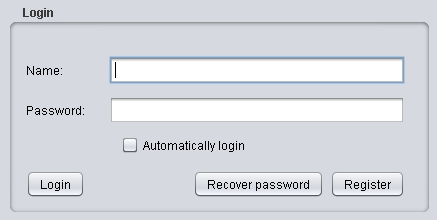
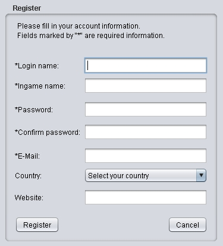
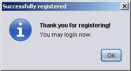
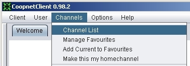
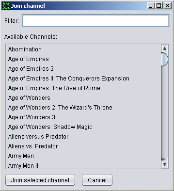
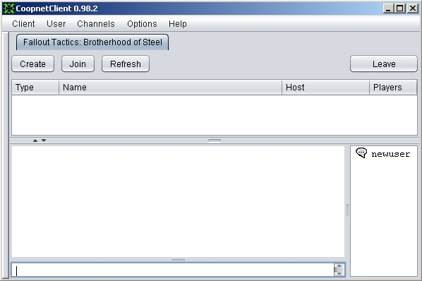
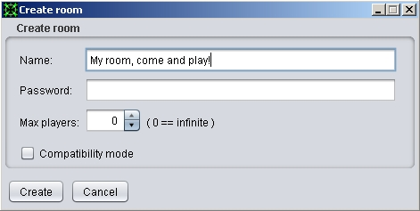
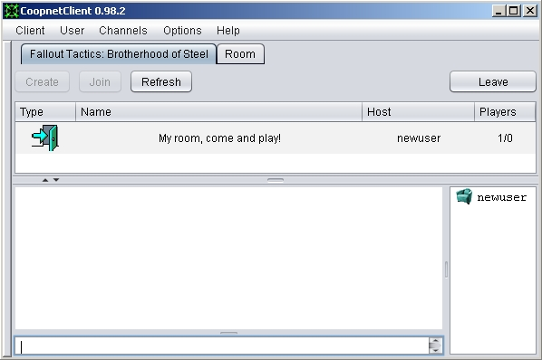
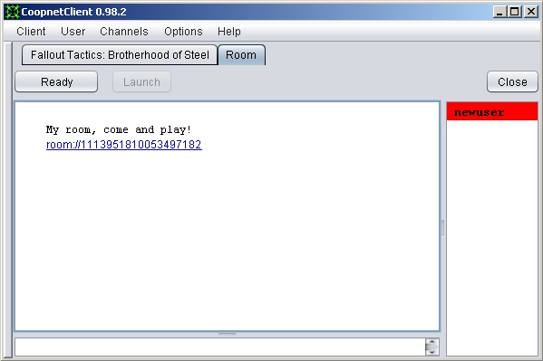

This is a short guide to get you to the game quick and easy!
When you start Coopnet the login tab should appear shortly. It looks like this:

First you have to register a new acount!
Click the "Register" button, the register form will appear.

Fill it out and press the "Register" button at the bottom! 
Upon success you will be taken back to the login screen.
Enter your password and press the "Login" button to log in.
You will be taken to the Welcome channel.
Games are associated with channels, each game has a channel where you can chat and play.
To select a channel use the "Channel List" item in "Channels" menu :

A new window will appear, it shows all available channels:

Doubleclick the game you want to play!
The window will dissapear and the games channel will appear:

At the bottom half is the chat. Type in the bottom textfield and press enter to send messages.
On the list on the right you can see the players in the channel.
The upper half is the roomlist.
To join an already existing room you doubleclick it on the room-list, or select it and press the "Join" button.
To create a new room press the "Create" button at the top. A new window will appear:

Here you must specify a name for the room.
Optionally you can set a password. When set, only people who know the password will be able to join your room
Press the "Create" button at the bottom to create the room.
The room tab will appear and your room will be added in the room list in the channel:

A room looks like this:

On the top there are some buttons, the rest is a chat similar to the channel chat.
The Ready button is to show the others you are ready to play.
Who does not ready up cannot play.
The player list on the right side shows the player status in color code:
-red means not ready
-green means ready
-yellow means the player is playing the game
The host has a Launch button that will start the game
and everyone who was ready will be launched into the game.
On the top right is the close/leave button.
This makes you leave the room and the room tab will dissapear.
If you are the host the room will be closed, everyone in it will leave it and it will be removed from the room list.
Joiners also have a "Use Hamachi" checkbox.
This enables players with network issues to play the game
but it is NOT recommended otherwise.
It will try to connect trough hamachi, so this only works if
both you and the host are connected to the same Hamachi network!
For more explanation see the manual!